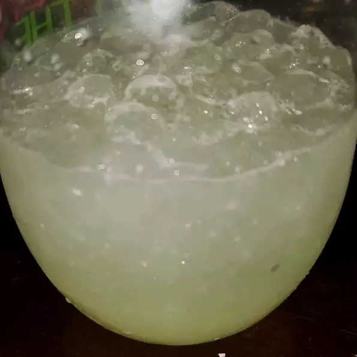

Agua Fresca de Pepino (Cucumber Limeade)

Description
This is another common agua fresca from Mexico. Refreshing, healthy, and delicious! Serve over ice.
Ingredients
- 5 cups water, or to taste
- 3 medium cucumbers, peeled and chopped
- ½ cup freshly squeezed lime juice
- ¼ cup granular sucralose sweetener (such as Splenda®), or to taste
Steps
- Blend 2 cups water, cucumbers, lime juice, and 2 tablespoons sweetener together in a blender until smooth. Pour into pitcher; add remaining water. Stir in additional sweetener to taste.